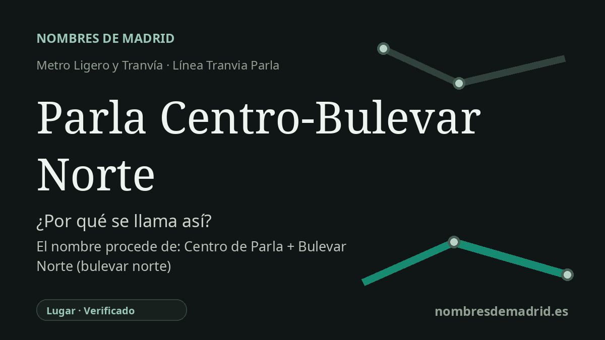

Publicado el · Investigación de Nombres de Madrid · Cómo verificamos cada origen · 6 fuentes consultadas
Respuesta rápida
Parla Centro-Bulevar Norte recibe su nombre por su ubicación en el nodo central de transporte de Parla, en la calle Real, junto al Bulevar Norte. El origen del topónimo Parla es debatido, pero el nombre de la estación es un topónimo descriptivo moderno.
La historia del nombre
El nombre **Parla Centro-Bulevar Norte** es ante todo una etiqueta de ubicación. Indica a los viajeros que la parada está en el centro de Parla, en la calle Real, junto al área del Bulevar Norte y al lado de la estación de Cercanías que sirve al centro urbano.
La segunda parte del nombre, **Bulevar Norte**, se refiere a un espacio urbano real, no solo a una orientación geográfica. Este bulevar septentrional forma parte del eje central de la calle Real, una de las vías históricas y de transporte más importantes de Parla. En 1996 Parla decidió dedicar el Bulevar Norte a Francisco Tomás y Valiente, expresidente del Tribunal Constitucional, tras su asesinato por ETA.
La parada pertenece al Tranvía de Parla, abierto por fases en 2007. La documentación estadística regional describe la primera fase como puesta en funcionamiento en junio de 2007, con 9 paradas, y una segunda sección el 8 de septiembre de 2007. La prensa de la época recoge la inauguración institucional del 6 de mayo de 2007 y explica que el tranvía conectaba el casco urbano con los nuevos desarrollos residenciales y con la estación de Cercanías.
El topónimo antiguo **Parla** es menos seguro que el nombre de la estación. Un artículo lingüístico de Jairo J. García Sánchez para el Centro Virtual Cervantes señala que Parla suele considerarse creado a partir del antropónimo romano **Parilus**, mediante una forma como el latín **(villa) Parila**, es decir, la finca o villa de ese propietario. Es una hipótesis académica, no un acto de denominación documentado.
La tradición popular ofrece una explicación más llamativa, pero más débil: Parla vendría de **parlar**, 'hablar', a veces mediante una leyenda sobre una persona muda que empezó a hablar tras beber agua de una fuente local. Esa historia tiene valor cultural, pero conviene presentarla como etimología popular. Para la estación, la conclusión fiable es más sencilla: la parada toma su nombre de su ubicación en el centro de Parla y del área del Bulevar Norte.